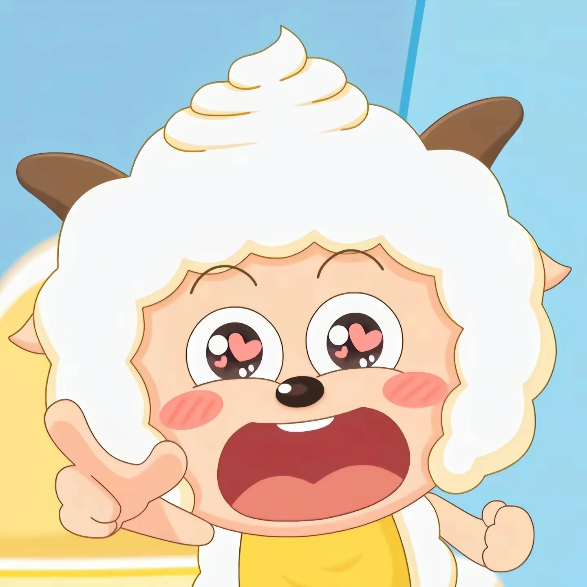
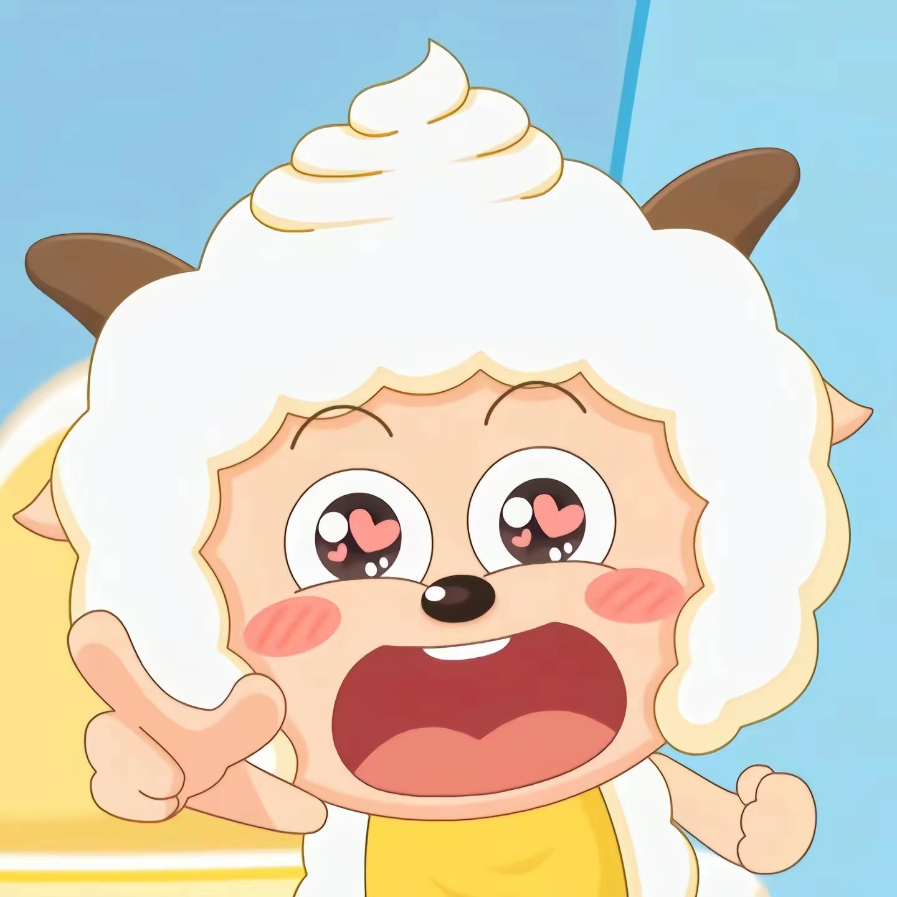

喜羊羊与灰太狼剧情介绍 在青青草原上，生活着一群无忧无虑的小羊们，他们的领导者是聪明伶俐的喜羊羊。喜羊羊总是能带领他的朋友们——美丽善良的美羊羊、力大无穷的沸羊羊、好吃懒做的懒羊羊、慢性子的慢羊羊村长以及乐于助人的暖羊羊，一起用智慧和勇气解决各种问题，对抗草原上的恶势力。 而草原的另一端，住着一只诡计多端的灰太狼。灰太狼和他的妻子红太狼，以及他们可爱的儿子小灰灰，总是企图捕捉羊村的居民作为晚餐。灰太狼虽然每次都能想出各种新奇的捕羊计划，但总是被喜羊羊和他的朋友们巧妙地化解。 故事的主线围绕着羊村和狼堡之间的斗争展开。喜羊羊和灰太狼之间的较量，不仅仅是力量上的对决，更是智慧和勇气的较量。在每一次的冲突中，喜羊羊总能凭借自己的聪明才智，带领羊村的朋友们化险为夷，让灰太狼的计划落空。 同时，故事也展现了友情、团结和互助的重要性。在面对困难和挑战时，羊村的小羊们总是能够团结一心，共同面对。而小灰灰作为灰太狼的儿子，虽然身处狼堡，却深受羊村朋友们的善良和友谊的影响，常常在关键时刻帮助羊村，成为羊狼之间的桥梁。 《喜羊羊与灰太狼》不仅是一部寓教于乐的动画片，更是一部传递正能量、弘扬真善美的作品。它告诉我们，在面对困难和挑战时，只要我们有足够的智慧和勇气，就一定能够战胜一切困难，实现自己的梦想。
 
